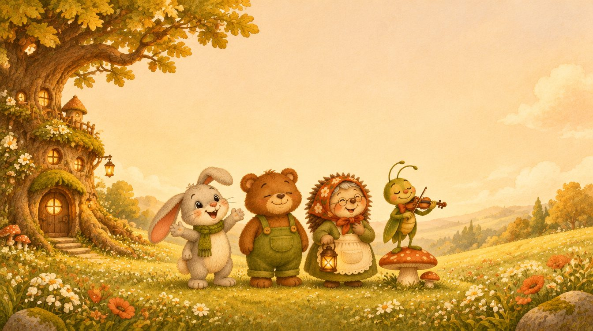
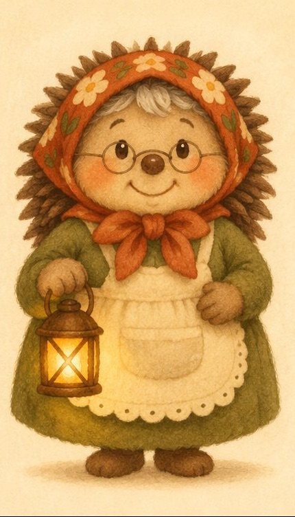
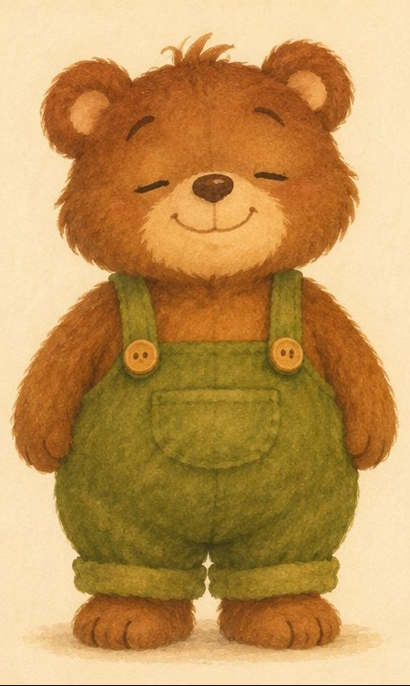
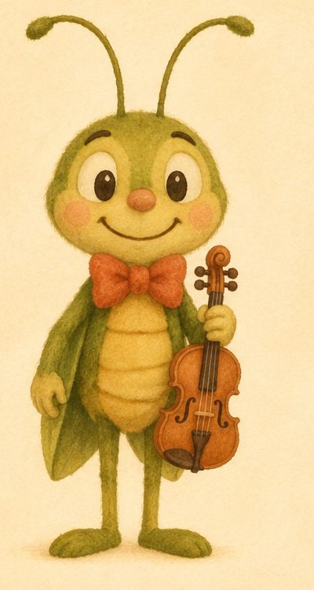
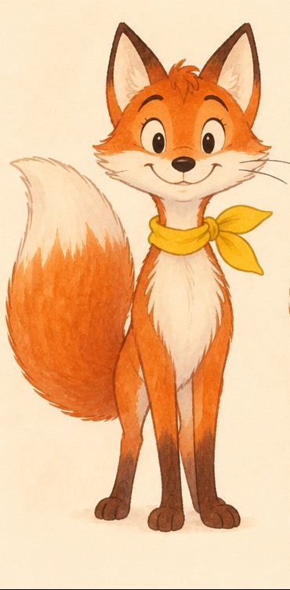
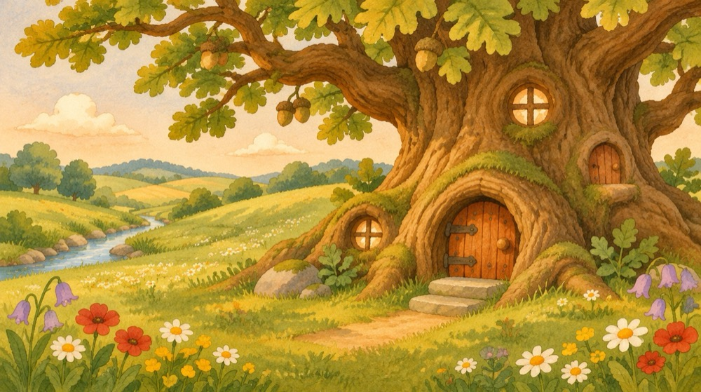

No fear, no tension
Even the night in Doupátkov is blue and kind. No villains, no jump scares before bedtime.

An animated series for preschoolers
Calm stories from a little village inside an old oak tree. No scares, no rush – just small childhood worries, kind friends and always a happy ending.
About the series
Hidden inside an old hollow oak lies Doupátkov, a cosy little village. It is home to Ouško, a curious little rabbit, and his friends. Each episode brings one simple situation that young children know from their own lives – being afraid of the dark, sharing toys, making a new friend or a storm outside the window.
The series is slow and soft, in the spirit of classic Czech bedtime cartoons. Nobody spells out the lesson – children discover it on their own, together with Ouško.
Even the night in Doupátkov is blue and kind. No villains, no jump scares before bedtime.
Sharing, jealousy, saying sorry, brushing teeth. Topics your child is going through right now.
Every episode ends with a song by Notička the cricket and the feeling that all is well again.
Characters
Just a few friends, so even the youngest viewers can easily remember them all.

curious little rabbit · main hero
He looks at the world with wonder and wants to try everything. Sometimes he makes mistakes, but he always learns something from them.

wise hedgehog granny
She knits in her rocking chair, brews herbal tea and knows what to do when things go wrong. With her lantern, nothing can frighten her.

clumsy but kind bear cub
A strongman with a big heart. He loves eating, loves sleeping, and at hide-and-seek he hides behind a flower.

tiny cricket musician
A cheerful soul who solves everything with a song. His little violin plays at the end of every episode.

a bit of a rascal fox
She notices absolutely everything. She came to Doupátkov as a new friend and teaches the others what is fair.
World
Round, soft and warm. Ochre, moss green and terracotta – as if the whole forest were knitted from wool.




Episode 1 · 10 minutes
Ouško plays with Brumla in the meadow until it gets dark. At home his candle goes out and a huge shadow with long ears appears on the wall. Babča Ježka takes her lantern and goes with him to have a look at the dark. And it turns out that everything has a kind explanation.
“The dark is just the time when the forest sleeps.”Babča Ježka
Episodes
Pick a topic your child is dealing with right now, or search for an episode by its title.
We couldn’t find that episode. Try another word. 🦔
For parents
Every episode has the same calm rhythm. Children know what is coming, and that helps them feel safe.
30 s
Who, where and what today is about.
6–7 min
A simple problem the character solves in their own way.
1–2 min
A gentle lesson – never loud, never preachy.
30 s
Notička plays and everyone says goodbye.